Launched at Dumbarton
Built by William Denny and Brothers for Williamson-Buchanan Steamers, for day excursions on the Firth of Clyde.
Clyde-built · Nineteen thirty-three
Two hundred and fifty were built here. One is left.

The restoration appeal
£xx m
Figure to be confirmed
Every pound goes into steel, boilers and the certification that lets a 1933 hull carry passengers again. Nothing else.
One hull, and a gap of nearly forty years in the middle.
Built by William Denny and Brothers for Williamson-Buchanan Steamers, for day excursions on the Firth of Clyde.
Cunard wanted it for their new Clydebank liner. Her owners agreed, and Cunard sent back a portrait of the Queen for her forward lounge.
Her coal-fired boilers replaced. The single funnel she carries today dates from this refit.
With the Cunarder retired she became TS Queen Mary again. The actor Roddy McMillan did the renaming.
Forty-four seasons ended, and nothing replaced her.
The Friends took ownership on 21 October, having raised some £300,000 in under a year.
She came up the firth on 15 May under tow, forty years after she last sailed it.
Scroll the ribbon →
There is no second one to fall back on.
Back under her own power on the water she was built for.
The first cadet training ship in the UK, in a city that used to build one of these a fortnight.
Decks, engine room and all, for school groups and anyone who sailed on her.
Gift Aid adds 25% at no cost to you.